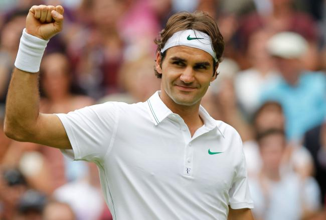

About Him

- Born in Switzerland
- Born on August 8th, 1981 (Currently 40 years old)
- Can speak multiple languages
- English
- German
- Swiss German
- French
- First debuted on the ATP Tour in 1998
- Established the Roger Federer Foundation in 2003
- Father of two sets of twins
- Myla and Charlene, born July 23rd, 2009
- Leo and Lenny, born May 6th, 2014
- Married former WTA player, Mirka Vavrinec, in 2009
- Has one sister, Diana Federer
- Mother is Lynette Federer and father is Robert Federer